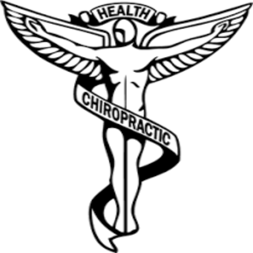
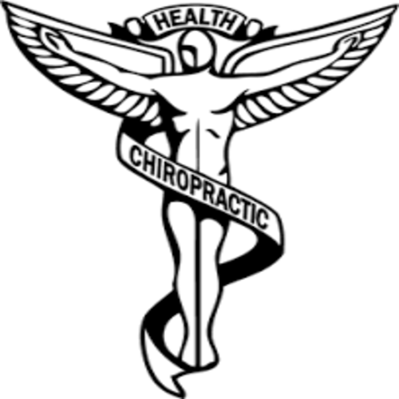
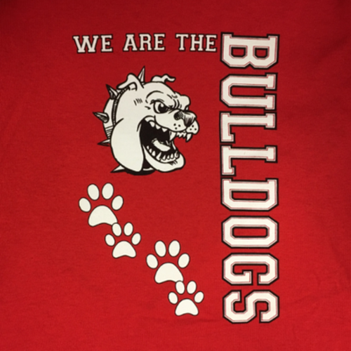
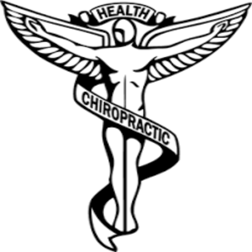
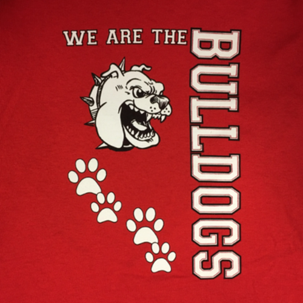

Wing Sze Lam
My name is Wing Sze, and I am currently a second-year biology major with the intent of being pre-med. The classes I am taking right now are calculus, biology, chemistry, and computer science. Hopefully, by spring quarter, I will be able to start taking upper division classes in order to graduate by four years. I started a job this past summer as a medical receptionist in a chiropractor's office in order to future expand my knowledge and experience in the medical field. The experience was very special and exciting, as it was also my first job. Some other steps I plan on taking to further my exposure in healthcare is to do some volunteer work at the hospital, shadow doctors, and participate in research projects. I plan on going back to my job during winter break in order to develop deeper connections with patients and other doctors whom my manager knows personally.
Some of the past experiences I have that are not related to the medical field include being a teacher’s assistant and babysitter. I was a teacher’s assistant at an elementary school for three years and helped out mainly during the summer. During the time as an assistant, I learned many valuable skills and lessons that convinced me to stay on the premed track. That opportunity is why I believe that although the experience was not directly related to the medical field, it left me with a stronger and more confident mindset to pursue the dream I have always had. Not only did I learn how to be a better leader, communicator, and problem solver, it also made me realize that asking for help or clarification is never embarrassing, no matter our age or position. Additionally, more times than not, having jobs that are unrelated to our career paths end up being beneficial because it allows and forces us to delve deeper into an unfamiliar field. This exposure sometimes ends up enabling people to realize their passions have changed and recognize their interest for another profession.
Much of my experiences have always been around younger children, with another extracurricular of mine being a babysitter for a family friend. Having lots of exposure surrounding young children further developed my passion for becoming a pediatrician, pushing me to strive to reach my aspirations. Although I am still very new to the work field, I recognize my privilege and luck to be able to be exposed to the healthcare field with my first ever paid job. This position enabled me to put my foot in the door and fully realize the hardships and dedication that healthcare workers put forth each and every day. I plan to apply the soft and hard skills learned from all of my experiences into the medical path, with an openness to explore and tackle various opportunities that may enhance my professional growth and knowledge.
Experience
Medical Receptionist
• Interacted and greeted 30+ patients daily in English, Cantonese, and Mandarin
• Scheduled appointments via phone call and in-person and made calls to paralegals
• Organized and maintained 60+ patient files daily
Teacher's Assistant
• Organized and assembled 500+ packets of assignments
• Oversaw a class of 25 students in the absence of the teacher
• Assisted teacher with maintaining a peaceful classroom environment by mediating conflicts
Babysitter
• Supervised 2 children twice a week for 5+ hours
• Provided homework assistance
• Encouraged collaboration and peace amongst the children
Education
UC Riverside
Portfolio
 



